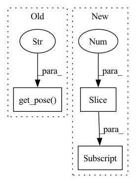

Pattern ID :4600

Before Change
return grasp_flags, object_labels, object_poses
def get_obs(self):
ee_pose = np.hstack(self.ri.get_pose("tipLink")).astype(np.float32)
grasp_flags, object_labels, object_poses = self.get_object_state(
self.object_ids, self.target_object_id
)
After Change
object_labels_init,
object_poses_init,
) = copy.deepcopy(self.object_state)
object_poses_init[:, :3] -= [
self.ee_pose_init[0],
self.ee_pose_init[1],
0,
In pattern: SUPERPATTERN
Frequency: 6
Non-data size: 3
Instances
Fragment ID: 16549420
Project Name: wkentaro/reorientbot
Commit Name: 99c40399b4ad0fac37c7c8da4e97b1aa05faacf1
Time: 2021-07-02
Author: www.kentaro.wada@gmail.com
File Name: examples/target_pick/_env.py
M Class Name: PickFromPileEnv
N Class Name: PickFromPileEnv
M Method Name: get_obs(1)
N Method Name: get_obs(1)
M Parent Class: Env
N Parent Class: Env
M File Name: examples/target_pick/_env.py
N File Name: examples/target_pick/_env.py
M Start Line: 481
M End Line: 490
N Start Line: 453
N End Line: 471
'>
Before Change
self.obs["depth"], fx=K[0, 0], fy=K[1, 1], cx=K[0, 2], cy=K[1, 2]
)
camera_to_world = self.ri.get_pose("camera_link")
ee_to_world = self.ri.get_pose("tipLink")
camera_to_ee = pp.multiply(pp.invert(ee_to_world), camera_to_world)
pcd_in_ee = mercury.geometry.transform_points(
pcd_in_camera,
After Change
camera_to_world = (
self.obs["camera_to_world"][:3],
self.obs["camera_to_world"][3:],
)
ee_to_world = self.ri.get_pose("tipLink")
camera_to_ee = pp.multiply(pp.invert(ee_to_world), camera_to_world)
'>
Fragment ID: 16549421
Project Name: wkentaro/safepicking
Commit Name: 00a981b9b4cf1f81c0cf6a3e995c12629accefa7
Time: 2021-06-02
Author: www.kentaro.wada@gmail.com
File Name: examples/grasp_with_intent/pick_and_place_env.py
M Class Name: PickAndPlaceEnv
N Class Name: PickAndPlaceEnv
M Method Name: validate_action(2)
N Method Name: validate_action(2)
M Parent Class: EnvBase
N Parent Class: EnvBase
M File Name: examples/grasp_with_intent/pick_and_place_env.py
N File Name: examples/grasp_with_intent/pick_and_place_env.py
M Start Line: 123
M End Line: 123
N Start Line: 124
N End Line: 230
'>
Before Change
self.target_object_class = data["class_id"][target_index]
self.target_object_visibility = data["visibility"][target_index]
self.ee_pose_init = np.hstack(self.ri.get_pose("tipLink")).astype(
np.float32
)
self.grasped_object_poses = np.zeros(
After Change
(self.episode_length - 1, 7), dtype=np.float32
)
self.ee_poses = np.r_[
self.ee_poses[1:],
np.hstack(ee_to_world).astype(np.float32)[None],
]
self.grasped_object_poses = np.zeros(
'>
Fragment ID: 16549413
Project Name: wkentaro/reorientbot
Commit Name: 94caf60d508f7d668a0cc341d44be5fc184b1cae
Time: 2021-06-11
Author: www.kentaro.wada@gmail.com
File Name: examples/target_pick/env.py
M Class Name: PickFromPileEnv
N Class Name: PickFromPileEnv
M Method Name: reset(3)
N Method Name: reset(3)
M Parent Class: Env
N Parent Class: Env
M File Name: examples/target_pick/env.py
N File Name: examples/target_pick/env.py
M Start Line: 184
M End Line: 355
N Start Line: 308
N End Line: 413